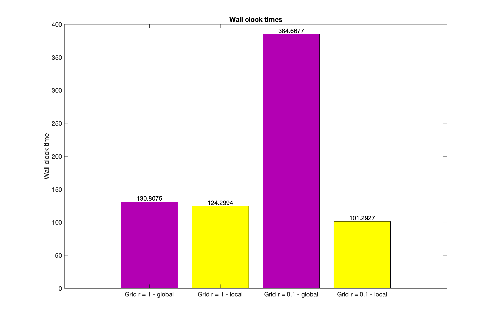

CFD
Supersonic Ramp
This 24h long project is part of the Numerical Methods for Compressible Flow course from Stanford taught by Prof. Charbel Farhat. The purpose is to compare computation times between global time-stepping and local time-stepping strategies to compute the steady-state conditions. All the code was done on Matlab.
The incoming flow conditions are : M = 2, p = 10^5 Pa, T = 300K, and the flow is along the x-axis. The computations were realized using the Finite Volume Method and Roe's approximate Riemann Solver. The chosen convergence criterion to determine steady-state is the Root Mean Square residues. As it is mostly governed by the energy values, a threshold value of 100 was chosen.
Two types of grids are used, one being more homogenous in terms of cell size than the other. Both time-stepping strategies are used on each grid. The domain is discretized using 60 points along the x-axis and 20 points along the y-axis.
The plots show the evolution of pressure, density, Mach number and convergence criterion. The results for the "homogenous" grid are shown below :
The computation times for both methods are similar in this case because of the fairly homogeneous cell size of the grid : 130.8075 s (global) and 124.2994 s (local).
For the "non-homogenous" grid, the results are shown below :
The difference in computation times is greatly emphasized as the global time-step is scaled on the smallest cell of the grid whereas the local time-step is scaled on the size of each cell. The computation times in this case are 384.6677 s (global) and 101.2927 s (local).
A summary of the computation times is shown in the following bar graph :
It can be concluded that the local time-stepping strategy can be way faster than the global time-stepping strategy when it comes to computing the steady-state conditions. However, local time-stepping should never be used to compute transient states as it would give non-physical results, which can be seen in the 4th video showing the local time-stepping startegy on the "non-homogenous" grid.